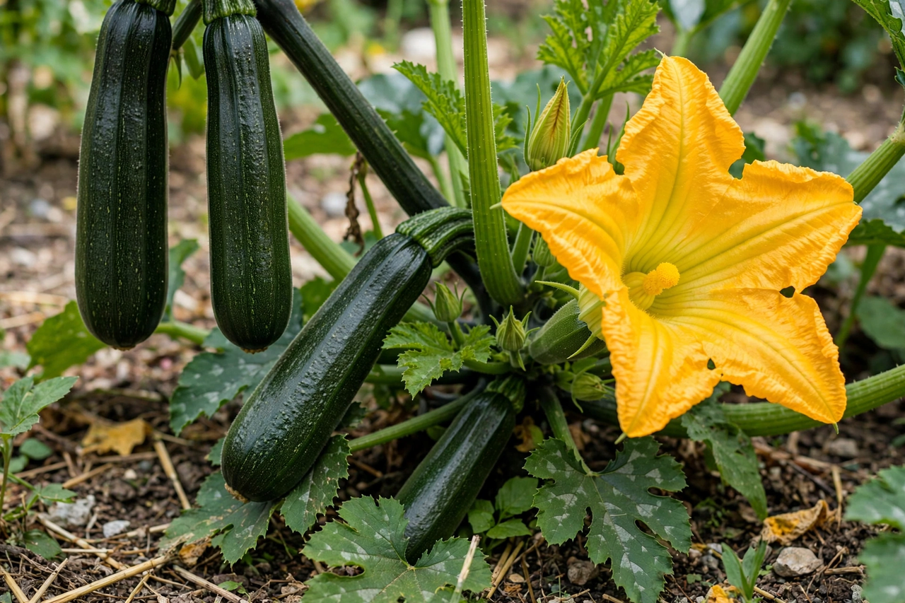

From Wikipedia, the free encyclopedia
| Zucchini | |
|---|---|
 Zucchini fruit and flower | |
| Species | Cucurbita pepo |
| Origin | Americas (developed as a cultivar in 19th-century Italy) |
| Also called | Courgette (British/French usage); baby marrow |
The zucchini (American English and Canadian English) or courgette (British English) is a summer squash, a vining herbaceous plant whose fruit are harvested when their immature seeds and epicarp (rind) are still soft and edible. The same plant produces fruit that, left to mature, become marrows. Botanically a berry-like fruit (a pepo) of the species Cucurbita pepo, the zucchini was developed in 19th-century northern Italy from squash first domesticated in Mesoamerica thousands of years earlier; its name derives from the Italian zucca, "gourd", with the diminutive zucchina.
Zucchini plants are famously prolific in warm weather with ample water; gardeners are advised to pick fruit young — typically 15–25 cm long — since unchecked fruits grow into huge marrows within days and heavy production slows. The plants bear separate male and female flowers; both are edible and, especially in Italian and Mexican cooking, are prized when stuffed and batter-fried. Poor pollination can cause fruit to abort or rot from the blossom end. Varieties range from the standard dark green cylinder to yellow, striped (Costata Romanesco) and round forms.
With a mild flavour and tender skin that needs no peeling, zucchini is grilled, sautéed, baked into breads and muffins, spiralised as a pasta substitute, and grated into fritters and omelettes. It is a component of French ratatouille and Provençal tian. The fruit is low in calories and a modest source of vitamin C, potassium and manganese. Toxic bitterness from elevated cucurbitacins can occur in cross-pollinated home-grown squash and should be discarded.
See also: Cucurbita pepo · Summer squash · Ratatouille · Pastry